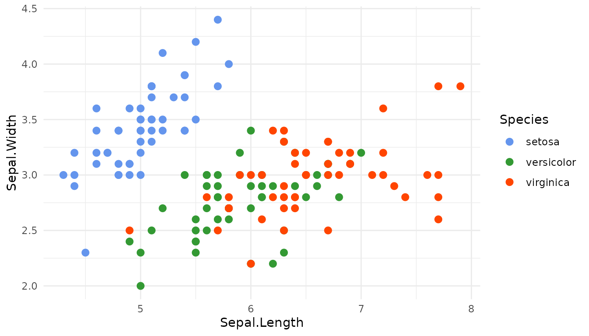
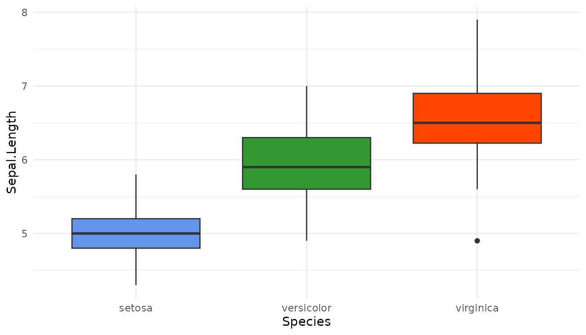
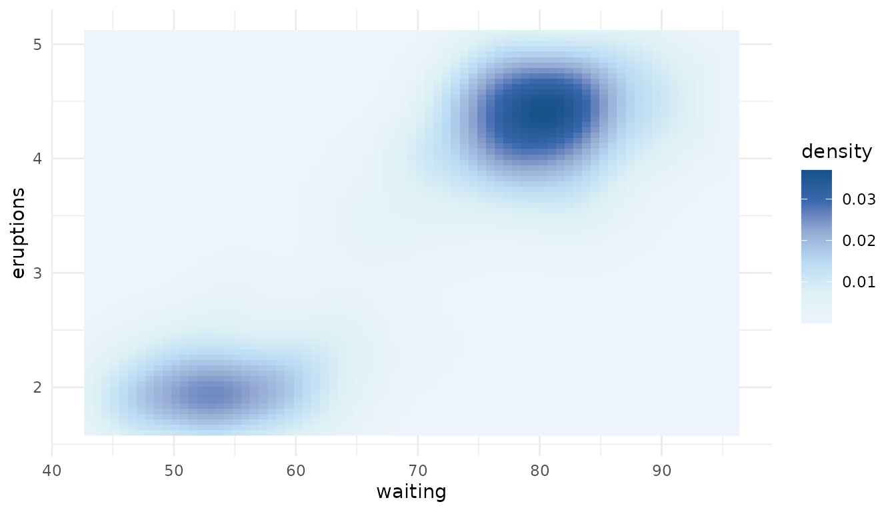
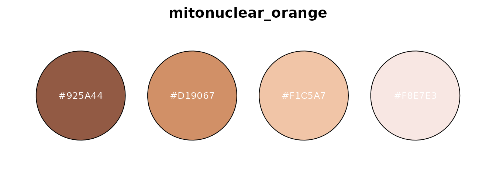

biopalette provides image-inspired color palettes for biomedical visualization. Each palette has a documented source and one of three types:
- qualitative palettes distinguish unordered groups;
- sequential palettes represent values progressing from low to high;
- diverging palettes show variation around a meaningful center.
This guide follows the usual workflow: find a palette, inspect it,
retrieve the colors, and apply it directly to a plot. See
vignette("install", package = "biopalette") if the package
is not yet installed.
Find a palette
Load biopalette and inspect the bundled collection:
library(biopalette)
list_palettes()[c("name", "type", "n_color")]
#> name type n_color
#> 1 bcell_atlas2 diverging 5
#> 2 walter_white diverging 5
#> 3 walter_white3 diverging 5
#> 4 gene_red qualitative 2
#> 5 heat_light qualitative 2
#> 6 fargo qualitative 3
#> 7 three_body qualitative 3
#> 8 lipid_budding qualitative 4
#> 9 lactate_steps qualitative 5
#> 10 walter_white2 qualitative 5
#> 11 tam_pastel qualitative 6
#> 12 bcell_atlas qualitative 7
#> 13 cytokine_sensors qualitative 7
#> 14 immune_circuit qualitative 8
#> 15 cancer_mosaic qualitative 15
#> 16 bcell_clusters qualitative 20
#> 17 babel qualitative 21
#> 18 lipid_budding_blue sequential 5
#> 19 lipid_budding_indigo sequential 5
#> 20 lipid_budding_orange sequential 5
#> 21 lipid_budding_rose sequential 5
#> 22 mitonuclear_blue sequential 6
#> 23 mitonuclear_orange sequential 6
#> 24 immune_circuit_green sequential 7
#> 25 immune_circuit_red sequential 7Filter by type when the visual role is already known:
list_palettes(type = "sequential")[c("name", "n_color")]
#> name n_color
#> 1 lipid_budding_blue 5
#> 2 lipid_budding_indigo 5
#> 3 lipid_budding_orange 5
#> 4 lipid_budding_rose 5
#> 5 mitonuclear_blue 6
#> 6 mitonuclear_orange 6
#> 7 immune_circuit_green 7
#> 8 immune_circuit_red 7palette_info() returns the complete metadata for one
palette without drawing it:
palette_info("mitonuclear_blue")
#> name type n_color colors
#> 1 mitonuclear_blue sequential 6 #EEF4FB,....For visual browsing, call palette_gallery() in an
interactive R session. It builds one gallery page per palette type and
reports each page as it is ready.
Retrieve colors
get_palette() returns a character vector of HEX colors.
Palette names are unique across the bundled collection, so
type is normally unnecessary:
get_palette("three_body")
#> [1] "#6495ED" "#339933" "#FF4500"
get_palette("mitonuclear_blue")
#> [1] "#EEF4FB" "#DDF1F5" "#B9DBF4" "#95AAD3" "#3A68AE" "#155289"The meaning of n follows the palette type. For a
qualitative palette, it selects the first n category colors
and cannot exceed the palette size:
get_palette("babel", n = 5)
#> [1] "#1688A7" "#7673AE" "#B3DE69" "#D195F6" "#7E285E"For sequential and diverging palettes, the stored colors are stops
along a ramp. Asking for n colors samples the whole ramp in
Lab color space rather than taking colors from only one end:
get_palette("mitonuclear_blue", n = 3)
#> [1] "#EEF4FB" "#A7C2E3" "#155289"
get_palette("walter_white", n = 7)
#> [1] "#1991A9" "#80B3BB" "#BAD1CF" "#E7E9E4" "#BEC7A6" "#889669" "#495A2E"Use reverse = TRUE when the direction of a palette
should be flipped:
get_palette("mitonuclear_blue", n = 3, reverse = TRUE)
#> [1] "#155289" "#A7C2E3" "#EEF4FB"The returned vector can be used anywhere that accepts R color values. For ggplot2, the scale functions provide a shorter and safer route.
Use a discrete scale
Map a qualitative palette to unordered groups with
scale_color_biopalette():
library(ggplot2)
ggplot(iris, aes(Sepal.Length, Sepal.Width, color = Species)) +
geom_point(size = 2.5) +
scale_color_biopalette("three_body") +
theme_minimal()
Use a color scale when the mapped aesthetic is
color (or colour), and a fill
scale when the mapped aesthetic is fill. This distinction
belongs to the geometry, not to the palette itself:
ggplot(iris, aes(Species, Sepal.Length, fill = Species)) +
geom_boxplot() +
scale_fill_biopalette("three_body", guide = "none") +
theme_minimal()
Discrete scales request exactly as many colors as the trained data
has levels. Qualitative palettes use their first n colors;
sequential and diverging palettes sample n colors across
the complete ramp. A qualitative palette raises an informative error
when it does not contain enough colors.
Use a continuous gradient
Continuous data requires a sequential or diverging palette and one of the gradient functions. A sequential fill gradient is appropriate for density:
ggplot(faithfuld, aes(waiting, eruptions, fill = density)) +
geom_raster() +
scale_fill_biopalette_gradient("mitonuclear_blue") +
theme_minimal()
For values interpreted relative to a reference point, use a diverging
palette and set midpoint. Here zero means no deviation from
the mean:
plot_data <- transform(
mtcars,
cylinders = factor(cyl),
gears = factor(gear),
mpg_difference = mpg - mean(mpg)
)
ggplot(plot_data, aes(cylinders, gears, fill = mpg_difference)) +
geom_tile(color = "white", linewidth = 0.5) +
scale_fill_biopalette_gradient("walter_white", midpoint = 0) +
labs(x = "Cylinders", y = "Gears", fill = "MPG difference") +
theme_minimal()
Qualitative palettes cannot define continuous gradients because interpolating unordered category colors has no stable meaning.
Preview one palette
preview_palette() draws directly to the active graphics
device. Its five styles are "bar", "pie",
"point", "rect", and
"circle":
preview_palette("walter_white", plot_type = "rect")The same n and reverse rules used by
get_palette() also apply to previews:
preview_palette(
"mitonuclear_orange",
n = 4,
reverse = TRUE,
plot_type = "circle"
)
Convert color formats
hex2rgb() and rgb2hex() convert between HEX
and RGB or RGBA values. Alpha is preserved when present:
Next steps
- Read
vignette("palette", package = "biopalette")for the sources, intended uses, and limitations of every bundled palette. - Open
?scale_color_biopalettefor discrete scale options. - Open
?scale_color_biopalette_gradientfor continuous gradients, transformations, custom stop positions, and diverging midpoints. - Read
vignette("tessera", package = "biopalette")to explore palettes, example datasets, Palette Lab, and complete R figure recipes. - Report reproducible problems in GitHub Issues.